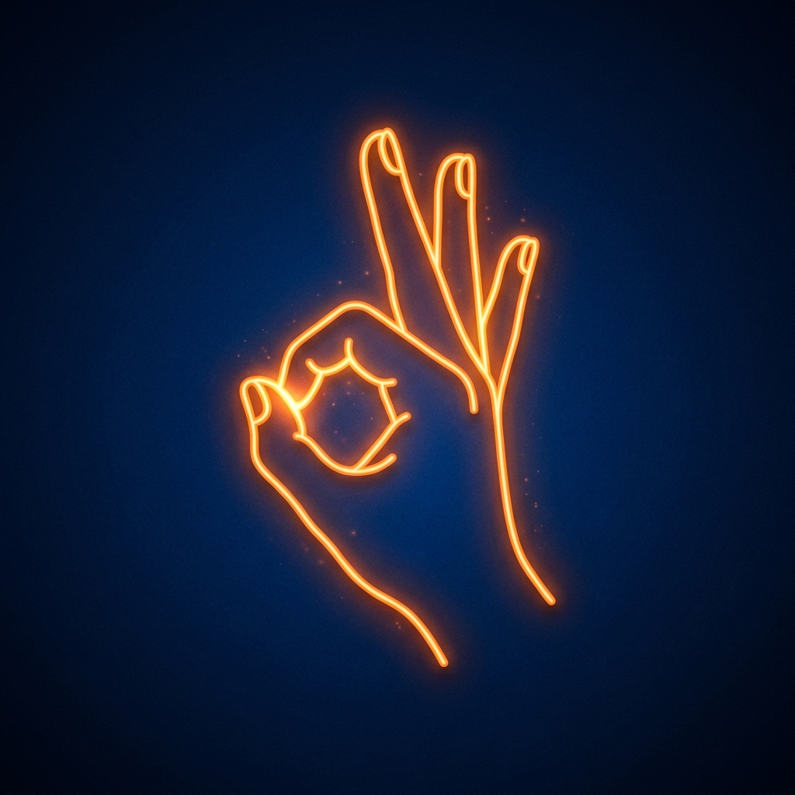
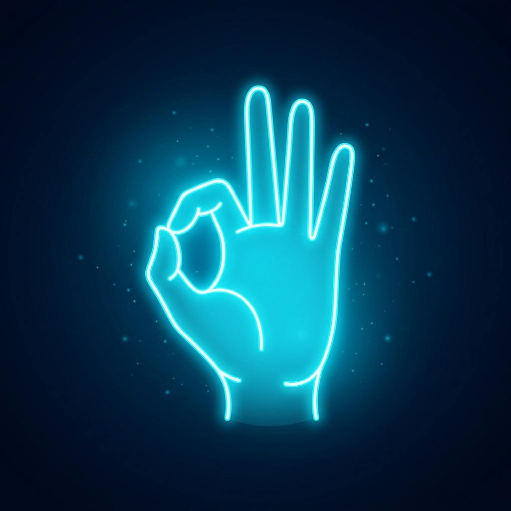

コーヒータイム
仮眠直前のカフェイン摂取で目覚めが驚くほどスッキリ。

ワンタップ・オートスタート
カフェイン × 仮眠の相乗効果
仮眠中に疲労物質が分解され、目覚めた瞬間にカフェインが効いて頭がクリアに！
時間と再生モードの選択
パワーナップの時間と再生スタイルを選択してください。
再生モードの選択（必須）
🌊 潮騒 ＆ 呼吸リズム誘導
1周期 8.5秒の潮騒リズム
副交感神経 優位
波が寄せてくる時
吸う（2.5秒）
波が遠のいて引く時
吐く（6.0秒）
寄せては返す波の音と528Hzのうねりに合わせて息を吐き出すことで、思考を手放し自然と眠りに落ちます
パワーナップ時間の選択
瞑想とリラックス
チン・ムドラーを結び、深呼吸で心を落ち着かせます。

チン・ムドラー
親指と人差し指を優しく接触させる
気の流れを整え、集中力を高めます。
手のひらを上に向けて膝の上に置く
開かれた姿勢でリラックスを深めます。
POWER NAP PHASE
パワーナップ中
15:00
👆 バーを指でなぞって時間移動できます
チン・ムドラー
⚡️ 528Hz + 4Hz 揺らぎ再生中
※ 終了直前に音量は自動で静かにフェードアウトします。
AWAKENING PREPARATION
覚醒タイムの準備
スーリヤ・ムドラー
薬指を折って親指で上から押さえる
体温と代謝を上昇させ、交感神経をONにします。
人差し指・中指・小指をまっすぐ伸ばす
エネルギーを全身に循環させ、頭脳を鮮明にします。
AWAKENING PHASE (3 MIN)
覚醒タイム進行中
03:00
👆 バーを指でなぞって時間移動できます
スーリヤ・ムドラー
⚡️ 40Hzガンマ波パルスサウンド再生中
SESSION COMPLETE
スッキリ覚醒完了！ 🎉
15分間の理想的なパワーナップと覚醒セッションが完了しました。
頭脳クリア＆集中力MAX
カフェインと40Hzサウンドの効果で、高いパフォーマンスを発揮できます。